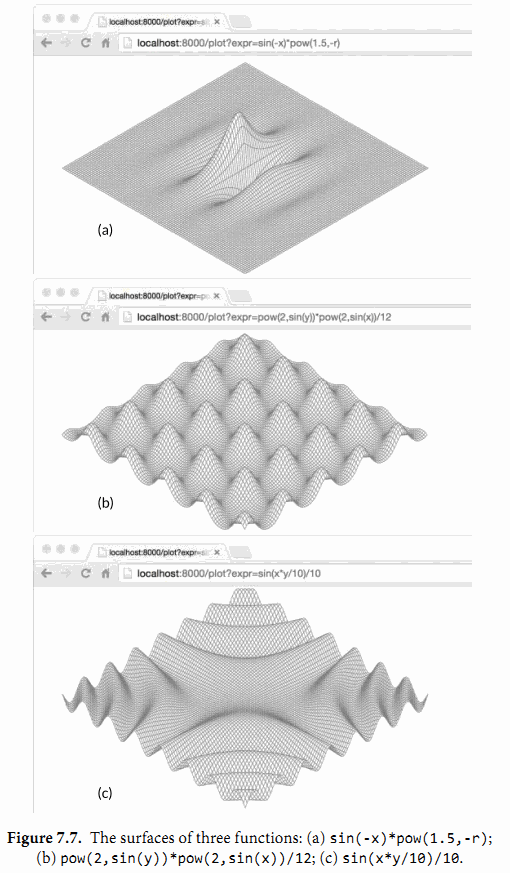

7.9. 示例: 表達式求值
在本節中，我們會構建一個簡單算術表達式的求值器。我們將使用一個接口Expr來表示Go語言中任意的表達式。現在這個接口不需要有方法，但是我們後面會為它增加一些。
// An Expr is an arithmetic expression.
type Expr interface{}
我們的表達式語言包括浮點數符號（小數點）；二元操作符+，-，*， 和/；一元操作符-x和+x；調用pow(x,y)，sin(x)，和sqrt(x)的函數；例如x和pi的變量；當然也有括號和標準的優先級運算符。所有的值都是float64類型。這下面是一些表達式的例子：
sqrt(A / pi)
pow(x, 3) + pow(y, 3)
(F - 32) * 5 / 9
下面的五個具體類型表示了具體的表達式類型。Var類型表示對一個變量的引用。（我們很快會知道為什麼它可以被輸出。）literal類型表示一個浮點型常量。unary和binary類型表示有一到兩個運算對象的運算符表達式，這些操作數可以是任意的Expr類型。call類型表示對一個函數的調用；我們限制它的fn字段只能是pow，sin或者sqrt。
gopl.io/ch7/eval
// A Var identifies a variable, e.g., x.
type Var string
// A literal is a numeric constant, e.g., 3.141.
type literal float64
// A unary represents a unary operator expression, e.g., -x.
type unary struct {
op rune // one of '+', '-'
x Expr
}
// A binary represents a binary operator expression, e.g., x+y.
type binary struct {
op rune // one of '+', '-', '*', '/'
x, y Expr
}
// A call represents a function call expression, e.g., sin(x).
type call struct {
fn string // one of "pow", "sin", "sqrt"
args []Expr
}
為了計算一個包含變量的表達式，我們需要一個environment變量將變量的名字映射成對應的值：
type Env map[Var]float64
我們也需要每個表達式去定義一個Eval方法，這個方法會根據給定的environment變量返回表達式的值。因為每個表達式都必須提供這個方法，我們將它加入到Expr接口中。這個包只會對外公開Expr，Env，和Var類型。調用方不需要獲取其它的表達式類型就可以使用這個求值器。
type Expr interface {
// Eval returns the value of this Expr in the environment env.
Eval(env Env) float64
}
下面給大家展示一個具體的Eval方法。Var類型的這個方法對一個environment變量進行查找，如果這個變量沒有在environment中定義過這個方法會返回一個零值，literal類型的這個方法簡單的返回它真實的值。
func (v Var) Eval(env Env) float64 {
return env[v]
}
func (l literal) Eval(_ Env) float64 {
return float64(l)
}
unary和binary的Eval方法會遞歸的計算它的運算對象，然後將運算符op作用到它們上。我們不將被零或無窮數除作為一個錯誤，因為它們都會產生一個固定的結果——無限。最後，call的這個方法會計算對於pow，sin，或者sqrt函數的參數值，然後調用對應在math包中的函數。
func (u unary) Eval(env Env) float64 {
switch u.op {
case '+':
return +u.x.Eval(env)
case '-':
return -u.x.Eval(env)
}
panic(fmt.Sprintf("unsupported unary operator: %q", u.op))
}
func (b binary) Eval(env Env) float64 {
switch b.op {
case '+':
return b.x.Eval(env) + b.y.Eval(env)
case '-':
return b.x.Eval(env) - b.y.Eval(env)
case '*':
return b.x.Eval(env) * b.y.Eval(env)
case '/':
return b.x.Eval(env) / b.y.Eval(env)
}
panic(fmt.Sprintf("unsupported binary operator: %q", b.op))
}
func (c call) Eval(env Env) float64 {
switch c.fn {
case "pow":
return math.Pow(c.args[0].Eval(env), c.args[1].Eval(env))
case "sin":
return math.Sin(c.args[0].Eval(env))
case "sqrt":
return math.Sqrt(c.args[0].Eval(env))
}
panic(fmt.Sprintf("unsupported function call: %s", c.fn))
}
一些方法會失敗。例如，一個call表達式可能有未知的函數或者錯誤的參數個數。用一個無效的運算符如!或者<去構建一個unary或者binary表達式也是可能會發生的（儘管下面提到的Parse函數不會這樣做）。這些錯誤會讓Eval方法panic。其它的錯誤，像計算一個沒有在environment變量中出現過的Var，只會讓Eval方法返回一個錯誤的結果。所有的這些錯誤都可以通過在計算前檢查Expr來發現。這是我們接下來要講的Check方法的工作，但是讓我們先測試Eval方法。
下面的TestEval函數是對evaluator的一個測試。它使用了我們會在第11章講解的testing包，但是現在知道調用t.Errof會報告一個錯誤就足夠了。這個函數循環遍歷一個表格中的輸入，這個表格中定義了三個表達式和針對每個表達式不同的環境變量。第一個表達式根據給定圓的面積A計算它的半徑，第二個表達式通過兩個變量x和y計算兩個立方體的體積之和，第三個表達式將華氏溫度F轉換成攝氏度。
func TestEval(t *testing.T) {
tests := []struct {
expr string
env Env
want string
}{
{"sqrt(A / pi)", Env{"A": 87616, "pi": math.Pi}, "167"},
{"pow(x, 3) + pow(y, 3)", Env{"x": 12, "y": 1}, "1729"},
{"pow(x, 3) + pow(y, 3)", Env{"x": 9, "y": 10}, "1729"},
{"5 / 9 * (F - 32)", Env{"F": -40}, "-40"},
{"5 / 9 * (F - 32)", Env{"F": 32}, "0"},
{"5 / 9 * (F - 32)", Env{"F": 212}, "100"},
}
var prevExpr string
for _, test := range tests {
// Print expr only when it changes.
if test.expr != prevExpr {
fmt.Printf("\n%s\n", test.expr)
prevExpr = test.expr
}
expr, err := Parse(test.expr)
if err != nil {
t.Error(err) // parse error
continue
}
got := fmt.Sprintf("%.6g", expr.Eval(test.env))
fmt.Printf("\t%v => %s\n", test.env, got)
if got != test.want {
t.Errorf("%s.Eval() in %v = %q, want %q\n",
test.expr, test.env, got, test.want)
}
}
}
對於表格中的每一條記錄，這個測試會解析它的表達式然後在環境變量中計算它，輸出結果。這裡我們沒有空間來展示Parse函數，但是如果你使用go get下載這個包你就可以看到這個函數。
go test(§11.1) 命令會運行一個包的測試用例：
$ go test -v gopl.io/ch7/eval
這個-v標識可以讓我們看到測試用例打印的輸出；正常情況下像這樣一個成功的測試用例會阻止打印結果的輸出。這裡是測試用例裡fmt.Printf語句的輸出：
sqrt(A / pi)
map[A:87616 pi:3.141592653589793] => 167
pow(x, 3) + pow(y, 3)
map[x:12 y:1] => 1729
map[x:9 y:10] => 1729
5 / 9 * (F - 32)
map[F:-40] => -40
map[F:32] => 0
map[F:212] => 100
幸運的是目前為止所有的輸入都是適合的格式，但是我們的運氣不可能一直都有。甚至在解釋型語言中，為了靜態錯誤檢查語法是非常常見的；靜態錯誤就是不用運行程序就可以檢測出來的錯誤。通過將靜態檢查和動態的部分分開，我們可以快速的檢查錯誤並且對於多次檢查只執行一次而不是每次表達式計算的時候都進行檢查。
讓我們往Expr接口中增加另一個方法。Check方法對一個表達式語義樹檢查出靜態錯誤。我們馬上會說明它的vars參數。
type Expr interface {
Eval(env Env) float64
// Check reports errors in this Expr and adds its Vars to the set.
Check(vars map[Var]bool) error
}
具體的Check方法展示在下面。literal和Var類型的計算不可能失敗，所以這些類型的Check方法會返回一個nil值。對於unary和binary的Check方法會首先檢查操作符是否有效，然後遞歸的檢查運算單元。相似地對於call的這個方法首先檢查調用的函數是否已知並且有沒有正確個數的參數，然後遞歸的檢查每一個參數。
func (v Var) Check(vars map[Var]bool) error {
vars[v] = true
return nil
}
func (literal) Check(vars map[Var]bool) error {
return nil
}
func (u unary) Check(vars map[Var]bool) error {
if !strings.ContainsRune("+-", u.op) {
return fmt.Errorf("unexpected unary op %q", u.op)
}
return u.x.Check(vars)
}
func (b binary) Check(vars map[Var]bool) error {
if !strings.ContainsRune("+-*/", b.op) {
return fmt.Errorf("unexpected binary op %q", b.op)
}
if err := b.x.Check(vars); err != nil {
return err
}
return b.y.Check(vars)
}
func (c call) Check(vars map[Var]bool) error {
arity, ok := numParams[c.fn]
if !ok {
return fmt.Errorf("unknown function %q", c.fn)
}
if len(c.args) != arity {
return fmt.Errorf("call to %s has %d args, want %d",
c.fn, len(c.args), arity)
}
for _, arg := range c.args {
if err := arg.Check(vars); err != nil {
return err
}
}
return nil
}
var numParams = map[string]int{"pow": 2, "sin": 1, "sqrt": 1}
我們在兩個組中有選擇地列出有問題的輸入和它們得出的錯誤。Parse函數（這裡沒有出現）會報出一個語法錯誤和Check函數會報出語義錯誤。
x % 2 unexpected '%'
math.Pi unexpected '.'
!true unexpected '!'
"hello" unexpected '"'
log(10) unknown function "log"
sqrt(1, 2) call to sqrt has 2 args, want 1
Check方法的參數是一個Var類型的集合，這個集合聚集從表達式中找到的變量名。為了保證成功的計算，這些變量中的每一個都必須出現在環境變量中。從邏輯上講，這個集合就是調用Check方法返回的結果，但是因為這個方法是遞歸調用的，所以對於Check方法，填充結果到一個作為參數傳入的集合中會更加的方便。調用方在初始調用時必須提供一個空的集合。
在第3.2節中，我們繪製了一個在編譯期才確定的函數f(x,y)。現在我們可以解析，檢查和計算在字符串中的表達式，我們可以構建一個在運行時從客戶端接收表達式的web應用並且它會繪製這個函數的表示的曲面。我們可以使用集合vars來檢查表達式是否是一個只有兩個變量x和y的函數——實際上是3個，因為我們為了方便會提供半徑大小r。並且我們會在計算前使用Check方法拒絕有格式問題的表達式，這樣我們就不會在下面函數的40000個計算過程（100x100個柵格，每一個有4個角）重複這些檢查。
這個ParseAndCheck函數混合瞭解析和檢查步驟的過程：
gopl.io/ch7/surface
import "gopl.io/ch7/eval"
func parseAndCheck(s string) (eval.Expr, error) {
if s == "" {
return nil, fmt.Errorf("empty expression")
}
expr, err := eval.Parse(s)
if err != nil {
return nil, err
}
vars := make(map[eval.Var]bool)
if err := expr.Check(vars); err != nil {
return nil, err
}
for v := range vars {
if v != "x" && v != "y" && v != "r" {
return nil, fmt.Errorf("undefined variable: %s", v)
}
}
return expr, nil
}
為了編寫這個web應用，所有我們需要做的就是下面這個plot函數，這個函數有和http.HandlerFunc相似的簽名：
func plot(w http.ResponseWriter, r *http.Request) {
r.ParseForm()
expr, err := parseAndCheck(r.Form.Get("expr"))
if err != nil {
http.Error(w, "bad expr: "+err.Error(), http.StatusBadRequest)
return
}
w.Header().Set("Content-Type", "image/svg+xml")
surface(w, func(x, y float64) float64 {
r := math.Hypot(x, y) // distance from (0,0)
return expr.Eval(eval.Env{"x": x, "y": y, "r": r})
})
}

這個plot函數解析和檢查在HTTP請求中指定的表達式並且用它來創建一個兩個變量的匿名函數。這個匿名函數和來自原來surface-plotting程序中的固定函數f有相同的簽名，但是它計算一個用戶提供的表達式。環境變量中定義了x，y和半徑r。最後plot調用surface函數，它就是gopl.io/ch3/surface中的主要函數，修改後它可以接受plot中的函數和輸出io.Writer作為參數，而不是使用固定的函數f和os.Stdout。圖7.7中顯示了通過程序產生的3個曲面。
練習 7.13： 為Expr增加一個String方法來打印美觀的語法樹。當再一次解析的時候，檢查它的結果是否生成相同的語法樹。
練習 7.14： 定義一個新的滿足Expr接口的具體類型並且提供一個新的操作例如對它運算單元中的最小值的計算。因為Parse函數不會創建這個新類型的實例，為了使用它你可能需要直接構造一個語法樹（或者繼承parser接口）。
練習 7.15： 編寫一個從標準輸入中讀取一個單一表達式的程序，用戶及時地提供對於任意變量的值，然後在結果環境變量中計算表達式的值。優雅的處理所有遇到的錯誤。
練習 7.16： 編寫一個基於web的計算器程序。